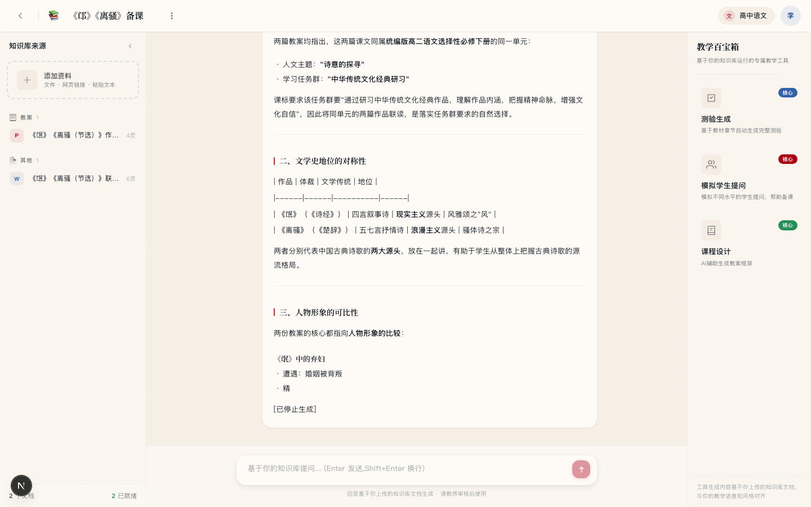
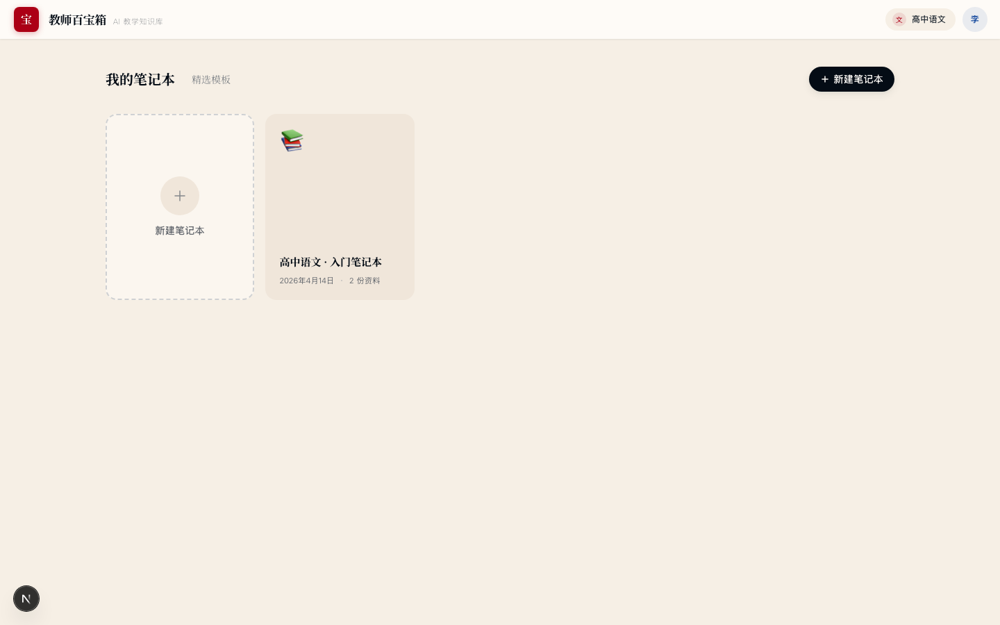
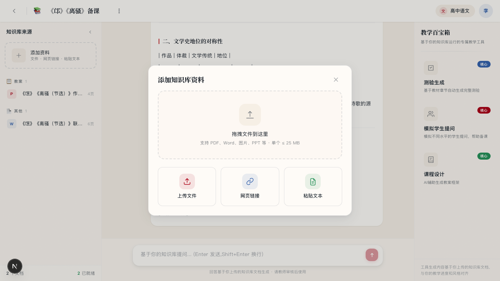
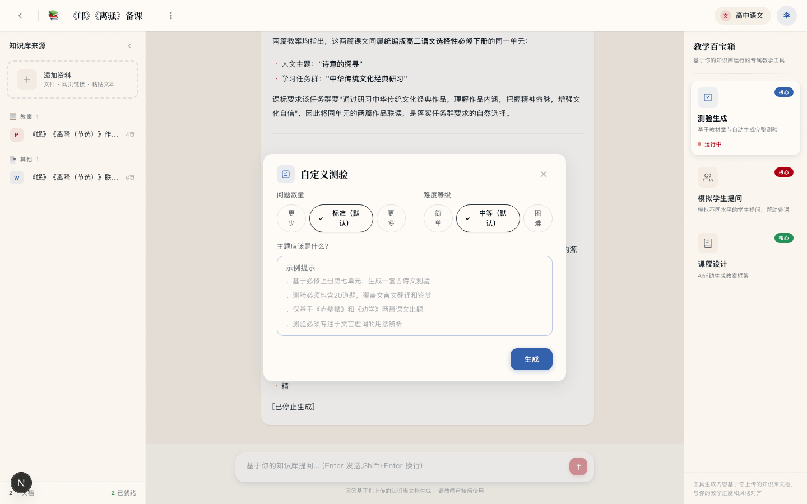
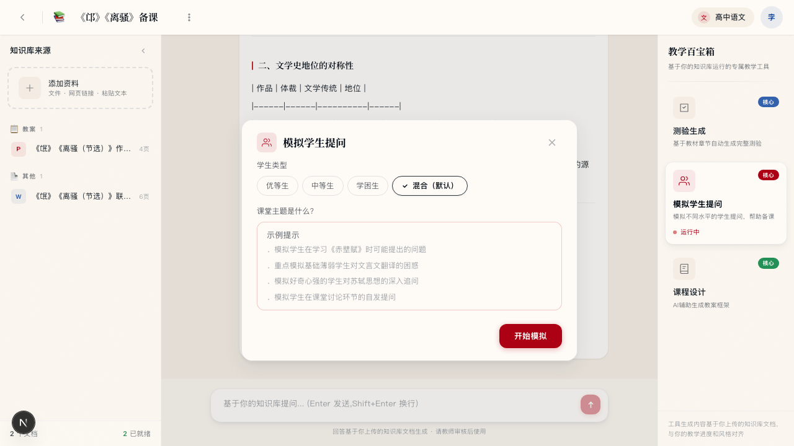
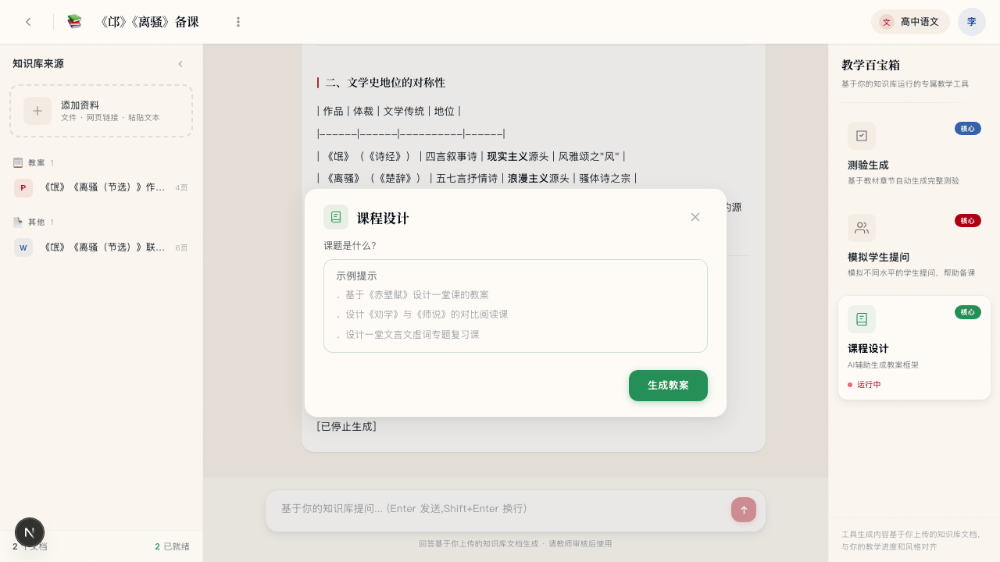

让 AI 为你的每一份教学资料服务
教师上传自己的教材、试卷、教案，AI 只基于这些资料工作。 不是"又一个聊天机器人"，而是绑定你班级、你进度、你教研风格的教学助手。

为什么教师用不好现有的 AI？
我们跟一线教师聊下来，真实困境集中在两点。不是"AI 不够聪明"，而是"AI 不是为教师设计的"。
AI 不懂"我的教材"
教师用的是特定版本的教材、是自己班上刚考过的试卷、是有具体进度的单元。 通用 AI 给出的是"平均的好答案"，不是"贴着你班级当前情况的答案"。
对话框不适配教学流程
备课、命题、改作业、预判学生提问 — 这些是教师每天的固定动作。 让教师自己把这些翻译成 prompt，摩擦极高，大多数老师坚持不过三天。
把 AI 重新接到教师的资料和工作流上
我们做了两件事：建立"属于教师自己的知识库"，把常见教学任务做成"一键工具"。
教师上传教材、试卷、教案 — 形成个人知识库。 AI 在任何回答、任何生成中，只基于这个知识库工作。
左栏 · 知识库
上传你的教材、试卷、教案、教学反思。AI 自动分类、自动摘要。
中栏 · 对话
基于知识库提问，流式回答。回答里出现的每个观点，你都能追溯到源文档。
右栏 · 百宝箱
测验生成、模拟学生提问、课程设计 — 一键完成教师最常做的三件事。
知识库：每个笔记本一个独立命名空间
你可以为"高一必修上"、"高三一轮复习"、"文言文专题"各开一本。 笔记本之间资料完全隔离，不串台、不泄露。

多格式资料统一入库
拖拽上传，后台异步解析，前端实时显示进度。
- PDF 教材 / 试卷 — 按页提取正文
- Word 教案 / 教研记录 — 保留段落结构
- 扫描版试卷 / 拍照的板书 — 走视觉大模型 OCR，按题号结构化
- 网页链接 / 粘贴纯文本 — 也能入库
- 自动分类：教材 / 试卷 / 教案 / 教学反思 / 其他

把"常做的事"变成"一键做完的事"
不用写 prompt，不用调 AI。教师选几个参数，其余由系统基于你的知识库完成。
测验生成 核心
基于你上传的教材和试卷自动出题。题目紧贴你班级学过的内容，而不是万能题库。
- 可选问题数量：5–8 / 10–12 / 15–20 题
- 可选难度：基础识记 / 基础+理解+分析 / 综合分析与鉴赏
- 支持指定主题范围（"只考必修上册第七单元"）
- 输出含题号、题型、分值、参考答案、评分标准

模拟学生提问 核心
备课时先预演一遍学生会怎么问。节省课堂上被意外问题卡住的尴尬。
- 可选学生类型：优等生 / 中等生 / 学困生 / 混合
- 生成 8–12 个真实学生会问的问题
- 每个问题附教师应对建议与讲解要点
- 帮助青年教师预判课堂难点、打磨教学语言

课程设计 核心
一键生成完整教案框架，节省找模板、抄别人教案、改格式的时间。
- 三维目标（知识与能力 / 过程与方法 / 情感态度）
- 教学重难点提取
- 五环节课时安排：导入 / 整体感知 / 深入研读 / 拓展延伸 / 总结作业
- 每个环节含教师活动 + 学生活动
- 板书设计 + 教学反思预留

一位语文老师的一天
以下是真实教师使用百宝箱前后的时间对比。
| 场景 | 使用前 | 使用百宝箱 |
|---|---|---|
| 备《赤壁赋》一节课 | 翻教参、找网上教案、拼接修改 · 90–120 分钟 | 上传原文，一键生成教案框架 + 模拟学生提问 · 15 分钟 |
| 出一份单元月考卷 | 从题库找题、调整难度、对齐单元重点 · 3–4 小时 | 指定单元范围 + 难度，直接生成完整试卷 · 20 分钟审题微调 |
| 预判学生疑难点 | 凭经验，青年教师往往漏判 · 经常被课堂追问 | 备课时先模拟 10 个学生提问，心中有数 · 15 分钟 |
| 整理单元复习资料 | 翻几节课的教案、笔记、反思 · 1–2 小时 | 问一句"整理本单元文言文知识点" · AI 跨资料整理 · 3 分钟 |
给老师、给学校、给学生
教育工具的价值，最终要落到三个层面。
给老师
- 重复性工作交给 AI
- 把时间留给真正面对学生
- 青年教师快速补齐经验短板
- 教研组可共享知识库
给学校
- 优秀教师的教案不再随离职流失
- 教研成果可跨年级、跨届复用
- 青年教师培养提速
- 教学过程留痕，便于教研督导
给学生
- 接触到更贴合自己进度的练习
- 老师有精力做个性化辅导
- 课堂提问得到更充分准备的回答
- 教学内容质量稳定性提升
学校最关心的事，我们提前想清楚了
教育数据是敏感数据。学生信息、教师教案、班级考情 — 任何一项出问题，都是不可逆的。
五项承诺
- 数据隔离 · 每位教师的知识库独立，不与他人混合，不用于训练公共模型
- 教师可控 · 上传、删除、导出完全由教师自主决定，随时可清空
- 最小化原则 · 系统只读取必要内容，不收集学生个人身份信息
- 操作留痕 · 所有上传、提问、生成记录可查，便于学校内审
- 本地部署可选 · 面向学校客户提供私有化部署方案，数据不出校园网
我们走到哪里了
目前 v0.1 MVP 已完成，核心流程全部跑通，正在邀请首批合作学校试用。
核心可用
- 三栏工作台
- 多格式知识库上传
- AI 自动分类 + OCR
- 流式对话 + 历史持久化
- 三大教学工具
- 中文输入法优化
合作校试点
- 账号体系 + 教研组协作
- 知识库检索增强（RAG）
- 学校私有部署版本
- 上传进度实时反馈
- 管理员后台 · 使用统计
科目与场景扩展
- 数学 / 英语 / 历史 适配
- 移动端 App
- 学生家长端 · 个性化推荐
- 跨校教研联合体
- AI 批改作业辅助
诚邀首批合作学校
面向公立 / 民办高中开放试点，提供定制化培训、专属对接、数据安全保障。
如果您所在的学校希望率先引入 AI 教学助手，欢迎联系我们。